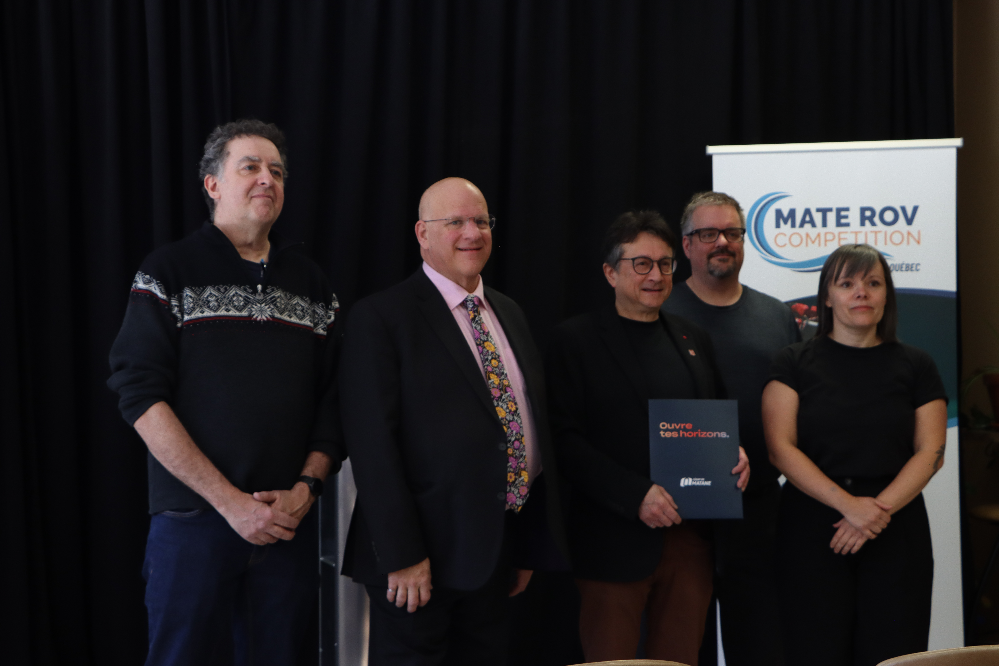
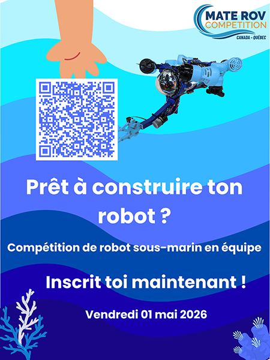

Compétition Mate Rov
Ce projet s’inscrit dans l’organisation et la promotion de la compétition MATE ROV Competition, un événement international de robotique sous-marine destiné aux étudiants. Pour cette édition à Matane, l’objectif était de faire découvrir cette compétition aux élèves du secondaire et du collégial, tout en valorisant les sciences et la technologie. Le concept repose sur la conception et la programmation de robots sous-marins (ROV) par équipes, qui doivent ensuite réaliser différentes missions dans une piscine. Cette compétition permet aux participants de développer des compétences techniques, de travailler en équipe et de vivre une expérience concrète et immersive. Elle s’inscrit également dans une volonté de lutter contre le décrochage scolaire en proposant une activité éducative motivante et accessible.
Organisation conférence de presse
Dans le cadre de ce projet, j’ai participé à la mise en place de la conférence de presse ainsi qu’à la promotion de l’événement. J’ai notamment contribué à la rédaction des outils de communication (communiqué de presse, invitation médias, pochette de presse), à la planification du déroulement de la conférence et à la coordination des différents intervenants. En parallèle, j’ai développé une stratégie de communication numérique visant à rejoindre les jeunes, en créant du contenu adapté aux réseaux sociaux et en définissant une ligne éditoriale cohérente. Ce travail m’a permis de mobiliser des compétences en relations publiques, en organisation d’événements et en gestion de communauté, tout en m’impliquant concrètement dans la valorisation d’un projet éducatif d’envergure.


Préparation aux éditions futures
Dans une perspective de développement futur de l’événement, j’ai également travaillé sur la mise en place d’une stratégie de communication durable visant à accroître la notoriété et la participation lors des prochaines éditions. Pour cela, j’ai défini des objectifs clairs, notamment augmenter le nombre d’inscriptions et renforcer la visibilité de la compétition auprès des jeunes et des enseignants. J’ai conçu plusieurs supports de communication adaptés aux différentes clientèles, dont des affiches distinctes pour les élèves et pour les enseignants, ainsi qu’un visuel destiné à un envoi par courriel. Cette approche permet d’adapter le message selon les attentes et les besoins de chaque cible, tout en assurant une diffusion efficace de l’information. L’objectif est de créer une communication cohérente et évolutive, capable de s’inscrire dans le temps et de soutenir la croissance de l’événement.
Compétences développé
- Organisation événementielle : Mise en place d’une conférence de presse et coordination des différents éléments nécessaires à son bon déroulement.
- Gestion de communauté : Création de contenus et définition d’une stratégie pour engager une clientèle jeune sur les réseaux sociaux.
- Stratégie de communication : Élaboration d’objectifs, identification des cibles et choix des canaux de diffusion pertinents.
- Créativité visuelle : Conception d’affiches et de supports visuels visant à capter l’attention et transmettre efficacement un message.